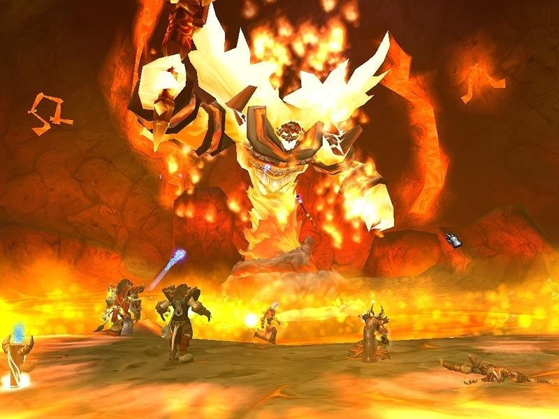

The Modern Era: MMOs & Open Worlds
Technology has allowed RPGs to scale from basement tables to persistent living worlds shared by millions. The focus shifted from internal character statistics to external world interaction and player freedom.
The Rise of MMORPGs 🌐
The introduction of high-speed internet allowed the RPG party to scale indefinitely. Games like EverQuest and World of Warcraft changed the social landscape of gaming. The "party" was no longer just 4 friends, but guilds of hundreds working together in real-time economies and persistent shared worlds.
Key MMO Innovations:
- **The Subscription Model:** Proving the genre could support massive, continuous development budgets.
- **PvP & PvE Ladders:** Creating both collaborative and competitive endgame content to ensure longevity.
- **Persistent Worlds:** The world continued to exist and evolve even when the player logged off.
Open World Freedom 🏞️
Modern single-player titles like The Witcher 3 or Skyrim focus heavily on immersion and player agency. The rigid, menu-driven structures of the past have largely given way to real-time interaction and physics-based systems.
Action Combat
Real-time physics, skill-based evasion, and reflexes replacing statistical dice rolls. The challenge lies in player execution, not just character stats.
Emergent Gameplay
World systems constantly interacting (e.g., fire burns grass, NPCs react to weather/crime) creating unscripted moments unique to each player's experience.
Cinematic Story
High-fidelity graphics, professional voice acting, and motion capture are used to deliver narratives rivaling modern film, often with morally complex choices.
Join the Adventure! 📝
Sign up to receive updates on the history of RPGs and future articles.